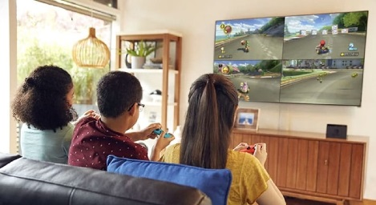

Mario Kart est une série de jeux vidéo de course produite par Nintendo. Adaptée de la série de jeux de plates-formes Super Mario, la saga connaît un grand succès au sein des familles, amis, etc... Débutée en 1992 par Super Mario Kart sur Super Nintendo, la série continue plus de vingt-cinq ans après avec Mario Kart 8 Deluxe sorti le 28 avril 2017 sur Nintendo Switch. Elle compte ainsi un total de huit opus sortis sur les principales consoles Nintendo, et trois titres « hors-série » développés sur borne d'arcade.
Le principe: L'objectif principal de Mario Kart est simple : le joueur doit parcourir le plus rapidement possible des circuits, un certain nombre de fois, dans l'optique de franchir la ligne d'arrivée en premier. Les adversaires sont contrôlés soit par l'ordinateur, soit par d'autres joueurs. Pour pimanter le gameplay, les joueurs ont la possibilité d'utiliser de nombreux objets. Ceux-ci s'obtiennent en atteignant avec son véhicule des cubes dotés d'un « ? » . Les objets peuvent être offensifs, défensifs ou encore stratégiques, permettant au joueur de bénéficier d'une accélération supplémentaire, de ralentir les adversaires, etc...
Que ça soit pour affronter ses amis, un ordinateur à 200cc ou même participer à une course frénétique avec beaucoup d'action, Mario Kart est un incontournable du jeux-vidéo familial. Issue du monde du petit plombier à casquette rouge, ce jeu sait ravir les joueurs occasionnels, mais aussi les joueurs plus aguéris avec le mode en ligne. Il fait des cartons en soirée, avec des amis, ou avec les petits cousins aux repas de famille, d'autant plus qu'il est disponible sur la plateforme la plus vendue du monde.
Un Grand Prix est composé d'une Coupe (soit 4 courses prédéfinies). A la fin d'une course, la position détermine le nombre de points puis le classement. Le but du jeu est de finir dans les 3 premiers du classement général.
Le mode bataille est un mode qui apparaît dans la totalité des jeux Mario Kart. Il s'agit d'un mode qui diffère des courses traditionnelles de chacun des jeux et dans lequel les joueurs participent à divers challenges dans le but de vaincre ses adversaires. Le mode bataille se déroule en général dans des arènes, parfois tirées des circuits du jeu et parfois totalement inédites.
Choississez ce mode pour personnaliser votre grand prix. Plusieurs paramètres peuvent être modifiés dans ce mode : la cylindrée, le niveau des pilotes contrôlés par l'ordinateur, les types de véhicules qui participeront à la course, le choix des circuits, les types d'objets disponibles, le nombre total de courses à effectuer.
Le mode contre la montre est un mode de jeu dont le but est d'avoir le meilleur score dans un circuit. Le mode contre-la-montre existe dans tous les jeux de la série Mario Kart. Contrairement aux Mario Kart officiels, il est possible de voir tout les scores sur un circuit.
Depuis son lancement sur super NES en 1992 Mario kart a beaucoup évolué et connu des portages sur toutes les consoles Nintendo voir au delà avec les bornes d'arcades. La plupart de ces itérations sont affiché dans le carrousel plus haut.
Super Mario Kart
Mario Kart 64
Mario Kart Super Circuit
Mario Kart Double Dash
Mario Kart DS
Mario Kart Arcade GP
Mario Kart Arcade GP 2
Mario Kart Wii
Mario Kart 7
Mario Kart Arcade GP DX
Mario Kart 8
Mario Kart 8 Deluxe
Mario Kart Arcade GP VR
Mario Kart Tour
Mario Kart Live Home Circuit
-> Super Nintendo
-> Nintendo 64
-> Gameboy Advance
-> Gamecube
-> Nintendo DS
-> Borne d’Arcade
-> Borne d’Arcade
-> Wii
-> Nintendo 3DS
-> Borne d’Arcade
-> Wii U
-> Nintendo Switch
-> Borne d’Arcade
-> Smartphone
-> Nintendo Switch
Jeunes étudiants en GBS1 au Gaming Campus. Nous vous presentons notre projet de codage d'un site Html sur un jeu que nous jugeons comme un classique du jeux vidéo